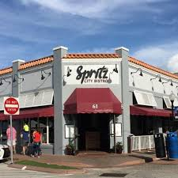
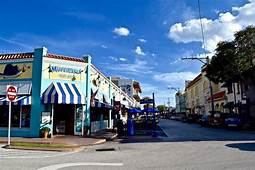

STUART:
Stuart, Florida is located on Florida’s East Coast, which borders the St. Lucie River and West of the Indian River. The climate is pleasant with mild winters and warm summers. The annual average temperature is 72°. Annual rainfall averages 70.44 inches. Stuart is famed for Sail fishing and all other types of sport fishing. You can enjoy Ocean fishing, river and bay fishing, fresh water fishing. The North and South forks of the St. Lucie River are tropical wonderlands for cruises. Stuart has quaint older neighborhoods in the downtown area. There is a mixture of town homes and condominiums. Stuart’s successful revitalization program has made the Downtown area a pleasant ambiance, lined with shops and restaurants.
Stuart is a city on Florida's Atlantic Coast. The House of Refuge at Gilbert's Bar is a restored home once used as a haven for shipwrecked sailors in the 1900s. Stuart Heritage Museum has local history displays, including furniture from early pioneer homes. The bird-rich Seabranch Preserve State Park features many trails and a butterfly garden. St. Lucie Inlet Preserve State Park is a nesting area for sea turtles.
Stuart is a city in and the seat of Martin County, Florida, United States. Located on Florida's Treasure Coast, Stuart is the largest of four incorporated municipalities in Martin County. The estimated population is 16,543 according to the most recent United States census estimates. Stuart is the 126th largest city in Florida based on official 2017 estimates from the US Census Bureau.[5] It is part of the Port St. Lucie, Florida Metropolitan Statistical Area.
Stuart is frequently cited as one of the best small towns to visit in the U.S., in large part because of its proximity to the St. Lucie River and Indian River Lagoon.